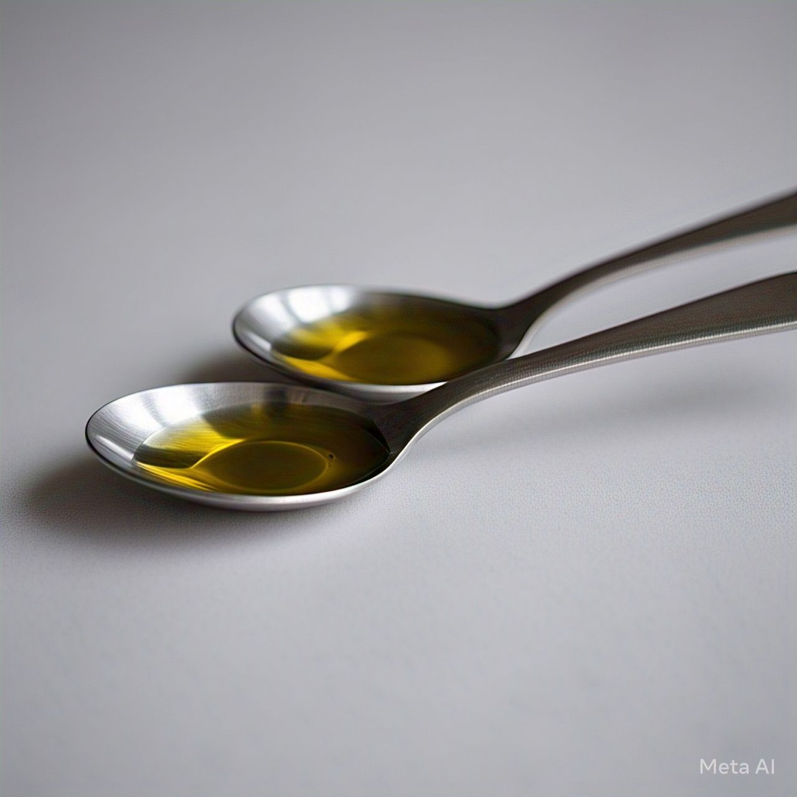

Buscar
Voltar para Receitas
❮
❯
Frango Grelhado com Limão e Alho
Tempo de preparo:
30 minutos
Ingredientes:
2 peitos de frango (ou coxas desossadas)
Suco de 1 limão
3 dentes de alho picados
 2 colheres de sopa de azeite de oliva
1 colher de chá de orégano (ou tomilho)
Sal e pimenta a gosto
1/2 colher de chá de páprica (opcional, para dar cor)
Raspas de limão para finalizar.
Modo de Preparo
Em uma tigela, misture o suco de limão, o alho picado, o azeite, o orégano, o sal, a pimenta e a páprica.
Coloque o frango na tigela e misture bem. Cubra e deixe marinar por pelo menos 30 minutos (ou até 4 horas na geladeira para mais sabor).
Pré-aqueça uma grelha ou frigideira em fogo médio-alto e unte levemente com azeite.
Coloque os pedaços de frango na grelha e cozinhe por cerca de 5-7 minutos de cada lado, até dourar bem e atingir 75°C internamente.
Retire do fogo, deixe descansar por 2 minutos, polvilhe com raspas de limão e sirva com acompanhamentos.
Sirva com arroz, legumes grelhados ou uma salada refrescante!

 2 peitos de frango (ou coxas desossadas)
2 peitos de frango (ou coxas desossadas) Suco de 1 limão
Suco de 1 limão Sal e pimenta a gosto
Sal e pimenta a gosto Raspas de limão para finalizar.
Raspas de limão para finalizar.